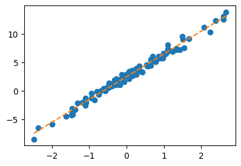
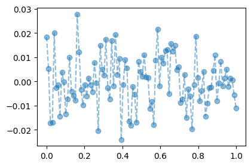
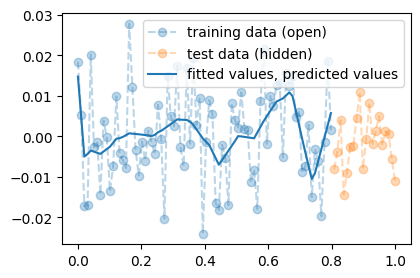
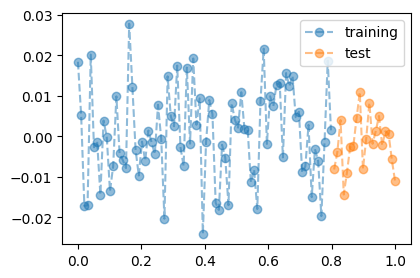
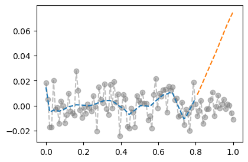
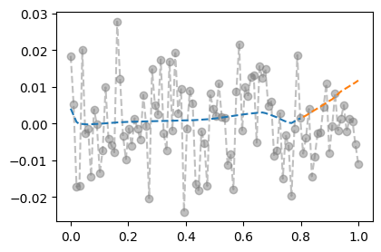

import torch
import matplotlib.pyplot as plt05wk-1: (신경망) – 예측, 시벤코정리의 이면, 드랍아웃

1. 강의영상
2. Imports
plt.rcParams['figure.figsize'] = (4.5, 3.0)3. 예측
# (x,y)
# 언더라잉 <-- 우리의 진목표 X
# 예측 <-- 이게 진짜 우리의 목표 A. 데이터
torch.manual_seed(43052)
x,_ = torch.randn(100).sort()
eps = torch.randn(100)*0.5
y = x * 4 + 2.5 + eps
x,y = x.reshape(-1,1), y.reshape(-1,1)plt.plot(x,y,'o')
B. 학습
net = torch.nn.Sequential(
torch.nn.Linear(1,1)
)
loss_fn = torch.nn.MSELoss()
optimizr = torch.optim.Adam(net.parameters(),lr=0.1)
##
for epoc in range(200):
## step1
yhat = net(x)
## step2
loss = loss_fn(yhat,y)
## step3
loss.backward()
## step4
optimizr.step()
optimizr.zero_grad()plt.plot(x,y,'o')
plt.plot(x,net(x).data,'--')
net[0].weight, net[0].bias(Parameter containing:
tensor([[4.0042]], requires_grad=True),
Parameter containing:
tensor([2.4459], requires_grad=True))C. 예측
온도가 0.1 도일때, 커피를 얼마나 팔까?
0.1 * 4.0042 + 2.4459 2.84632xx = torch.tensor([[0.1]])
net(xx)tensor([[2.8463]], grad_fn=<AddmmBackward0>)온도가 0.2도일때 커피를 얼마나 팔까?
0.2 * 4.0042 + 2.4459 3.24674xx = torch.tensor([[0.2]])
net(xx)tensor([[3.2467]], grad_fn=<AddmmBackward0>)온도가 [0.1, 0.2] 일때의 예측값을 한번에 보고 싶다면?
xx = torch.tensor([[0.1],
[0.2]])
net(xx)tensor([[2.8463],
[3.2467]], grad_fn=<AddmmBackward0>)
Note
이거 질문이 와서 좀 더 자세히 설명하겠습니다. 하나의 값 \(x\)에 대하여 \(net(x)\)를 한번 풀어 써보면 아래와 같습니다.
net(x) = 4.0042 * x + 2.4459 = net[0].weight * x + net[0].bias이것은 아래의 수식과 같습니다.
\[net(\begin{bmatrix} x \end{bmatrix}) = 2.4459 + \begin{bmatrix} x \end{bmatrix} \begin{bmatrix} 4.0042 \end{bmatrix}\]
여기에서 \(\begin{bmatrix} x \end{bmatrix}\) 와 \(\begin{bmatrix} 4.0042 \end{bmatrix}\) 는 모두 \(1\times 1\) matrix를 의미합니다. 만약에 \(2 \times 1\) matrix \({\bf x} = \begin{bmatrix} x_1 \\ x_2 \end{bmatrix}\)를 네트워크의 입력으로 고려한다면 아래와 같이 됩니다.
\[net({\bf x})=net\left(\begin{bmatrix}x_1 \\ x_2 \end{bmatrix}\right) = 2.4459 + \begin{bmatrix} x_1 \\ x_2 \end{bmatrix} \begin{bmatrix} 4.0042 \end{bmatrix} = \begin{bmatrix} 2.4459 + 4.0042 x_1 \\ 2.4459 + 4.0042 x_2\end{bmatrix} \]
따라서 \({\bf xx} = \begin{bmatrix} 0.1 \\ 0.2 \end{bmatrix}\) 를 네트워크의 입력으로 넣으면
\[net({\bf xx})= \begin{bmatrix} 2.4459 + 4.0042 \times 0.1 \\ 2.4459 + 4.0042 \times 0.2\end{bmatrix}= \begin{bmatrix} 2.8463 \\ 3.2467 \end{bmatrix}\]
와 같이 계산되겠죠.
4. 오버피팅 (시벤코정리의 이면)
A. 오버피팅
- 오버피팅이란?
- 위키: In mathematical modeling, overfitting is “the production of an analysis that corresponds too closely or exactly to a particular set of data, and may therefore fail to fit to additional data or predict future observations reliably”. (수학적 모델링에서 과적합이란 “어떤 모델이 주어진 데이터에 너무 꼭 맞춰져 있어서, 새로운 데이터나 미래의 결과를 잘 예측하지 못할 수 있는 상태”를 의미한다.)
- 제 개념: 데이터를 “데이터 = 언더라잉 + 오차”라고 생각할때 우리가 데이터로부터 적합할 것은 언더라잉인데 오차항을 적합하고 있는 현상.
B. 오버피팅 예시
- \(m\)이 매우 클때 아래의 네트워크 거의 무엇이든 맞출 수 있다고 보면 된다.
- \(\underset{(n,1)}{\bf X} \overset{l_1}{\to} \underset{(n,m)}{\boldsymbol u^{(1)}} \overset{h}{\to} \underset{(n,m)}{\boldsymbol v^{(1)}} \overset{l_2}{\to} \underset{(n,1)}{\hat{\boldsymbol y}}\)
- \(\underset{(n,1)}{\bf X} \overset{l_1}{\to} \underset{(n,m)}{\boldsymbol u^{(1)}} \overset{sig}{\to} \underset{(n,m)}{\boldsymbol v^{(1)}} \overset{l_2}{\to} \underset{(n,1)}{\hat{\boldsymbol y}}\)
- \(\underset{(n,1)}{\bf X} \overset{l_1}{\to} \underset{(n,m)}{\boldsymbol u^{(1)}} \overset{relu}{\to} \underset{(n,m)}{\boldsymbol v^{(1)}} \overset{l_2}{\to} \underset{(n,1)}{\hat{\boldsymbol y}}\)
- 그런데 종종 맞추지 말아야 할 것들도 맞춘다.
\[\text{model:} \quad y_i = (0\times x_i) + \epsilon_i,~~ \text{where}~ \epsilon_i \sim N(0,0.01^2)\]
torch.manual_seed(5)
x = torch.linspace(0,1,100).reshape(100,1)
y = torch.randn(100).reshape(100,1)*0.01
plt.plot(x,y,'--o',alpha=0.5)
torch.manual_seed(1)
net = torch.nn.Sequential(
torch.nn.Linear(1,512),
torch.nn.ReLU(),
torch.nn.Linear(512,1)
)
loss_fn = torch.nn.MSELoss()
optimizr = torch.optim.Adam(net.parameters())
#---#
for epoc in range(1000):
## step1
yhat = net(x)
## step2
loss = loss_fn(yhat,y)
## step3
loss.backward()
## step4
optimizr.step()
optimizr.zero_grad()plt.plot(x,y,'--o',alpha=0.5)
plt.plot(x,net(x).data,'--')
C. 오버피팅이라는 뚜렷한 증거! (train / test)
- 데이터의 분리하여 보자.
torch.manual_seed(5)
x_all = torch.linspace(0,1,100).reshape(100,1)
y_all = torch.randn(100).reshape(100,1)*0.01
x,xx = x_all[:80], x_all[80:]
y,yy = y_all[:80], y_all[80:]
plt.plot(x,y,'--o',alpha=0.5,label="training")
plt.plot(xx,yy,'--o',alpha=0.5,label="test")
plt.legend()
- train만 학습
torch.manual_seed(1)
net = torch.nn.Sequential(
torch.nn.Linear(1,512),
torch.nn.ReLU(),
torch.nn.Linear(512,1)
)
loss_fn = torch.nn.MSELoss()
optimizr = torch.optim.Adam(net.parameters())
#---#
for epoc in range(1000):
## step1
yhat = net(x)
## step2
loss = loss_fn(yhat,y)
## step3
loss.backward()
## step4
optimizr.step()
optimizr.zero_grad()- training data로 학습한 net를 training data 에 적용
plt.plot(x_all,y_all,'--o',alpha=0.5,color="gray")
plt.plot(x,net(x).data,'--')
- training에서는 그럭저럭 잘 맞춤
- training data로 학습한 net를 test data 에 적용
plt.plot(x_all,y_all,'--o',alpha=0.5,color="gray")
plt.plot(x,net(x).data,'--')
plt.plot(xx,net(xx).data,'--')
- train에서는 그럭저럭 잘 맞추는데 test에서는 엉망이다 = overfit
D. 시벤코정리의 올바른 이해
Note
시벤코의 항변(?) (Cybenko 1989)
하나의 은닉층을 가지는 아래와 같은 꼴의 네트워크 \(net: {\bf X}_{n \times p} \to {\bf y}_{n\times q}\)는
net = torch.nn.Sequential(
torch.nn.Linear(p,???),
torch.nn.Sigmoid(), ## <-- 여기에 렐루를 써도 된다.
torch.nn.Linear(???,q)
)모든 보렐가측함수
\[f: {\bf X}_{n \times p} \to {\bf y}_{n\times q}\]
를 원하는 정확도로 “근사”시킬 수 있다. 쉽게 말하면 \({\bf X} \to {\bf y}\) 인 어떠한 복잡한 규칙라도 하나의 은닉층을 가진 신경망이 원하는 정확도로 근사시킨다는 의미이다. 그렇지만 이러한 규칙이 네크워크가 학습하지 못했던 자료 (처음 보는 자료, unseen data) \({\bf XX}_{m \times p}\), \({\bf yy}_{m \times q}\) 에 대하여서도 올바르게 적용된다라는 보장은 없다. 시벤코는 단지 net가 가지는 표현력의 한계를 수학적으로 밝혔을 뿐이다.
Cybenko, George. 1989. “Approximation by Superpositions of a Sigmoidal Function.” Mathematics of Control, Signals and Systems 2 (4): 303–14.
5. 드랍아웃
A. 오버피팅의 해결
- 오버피팅의 해결책: 드랍아웃
- 데이터
torch.manual_seed(5)
x_all = torch.linspace(0,1,100).reshape(100,1)
y_all = torch.randn(100).reshape(100,1)*0.01
#plt.plot(x_all,y_all,'--o',alpha=0.5)
x,y = x_all[:80], y_all[:80]
xx,yy = x_all[80:], y_all[80:]
plt.plot(x,y,'--o',color="C0")
plt.plot(xx,yy,'--o',color="C1")
- 학습
torch.manual_seed(1)
net = torch.nn.Sequential(
torch.nn.Linear(1,512),
torch.nn.ReLU(),
torch.nn.Dropout(0.8),
torch.nn.Linear(512,1)
)
loss_fn = torch.nn.MSELoss()
optimizr = torch.optim.Adam(net.parameters())
#---#
for epoc in range(1000):
## step1
yhat = net(x)
## step2
loss = loss_fn(yhat,y)
## step3
loss.backward()
## step4
optimizr.step()
optimizr.zero_grad()- 결과시각화 (잘못된 사용)
plt.plot(x_all,y_all,'--o',alpha=0.5,color="gray")
plt.plot(x,net(x).data,'--')
plt.plot(xx,net(xx).data,'--')
- 결과시각화 (올바른 사용)
net.training Truenet.eval()Sequential(
(0): Linear(in_features=1, out_features=512, bias=True)
(1): ReLU()
(2): Dropout(p=0.8, inplace=False)
(3): Linear(in_features=512, out_features=1, bias=True)
)net.trainingFalseplt.plot(x_all,y_all,'--o',alpha=0.5,color="gray")
plt.plot(x,net(x).data,'--')
plt.plot(xx,net(xx).data,'--')
B. 드랍아웃 레이어
- 드랍아웃의 성질1: 드랍아웃의 계산방식을 이해해보자.
u = torch.randn(10,2)
d = torch.nn.Dropout(0.9)
utensor([[ 0.7851, 0.2332],
[ 0.5315, 2.0061],
[ 2.4805, -0.7937],
[ 1.2779, -2.4033],
[ 0.0449, 2.1013],
[-0.5136, -0.3627],
[ 1.4066, -0.5157],
[ 0.2175, -0.9112],
[-2.2057, 0.7507],
[ 0.2662, 1.3014]])d(u)tensor([[ 0.0000, 0.0000],
[ 0.0000, 0.0000],
[24.8053, -0.0000],
[ 0.0000, -0.0000],
[ 0.0000, 0.0000],
[-0.0000, -0.0000],
[ 0.0000, -5.1567],
[ 0.0000, -9.1124],
[-0.0000, 0.0000],
[ 0.0000, 13.0135]])- 90%의 드랍아웃: 드랍아웃층의 입력 중 임의로 90%를 골라서 결과를 0으로 만든다. + 그리고 0이 되지않고 살아남은 값들은 10배 만큼 값이 커진다.
- 남은값을 10배 키우는 이유? 출력의 평균값을 보정하기 위해서
- 드랍아웃의 성질2: 드랍아웃을 on/off 하는 방법을 이해해보자.
u = torch.randn(10,2)
utensor([[ 0.5939, -0.5941],
[-0.5187, 0.3663],
[ 0.3729, -0.3805],
[-0.0226, -0.7734],
[-1.8067, -1.2790],
[-1.4229, -1.8600],
[-1.6234, 1.4009],
[ 0.3473, 0.4739],
[ 0.1751, 0.3587],
[ 0.9764, -0.8333]])net = torch.nn.Sequential(
torch.nn.Dropout(0.9)
)
netSequential(
(0): Dropout(p=0.9, inplace=False)
)u,net(u)(tensor([[ 0.5939, -0.5941],
[-0.5187, 0.3663],
[ 0.3729, -0.3805],
[-0.0226, -0.7734],
[-1.8067, -1.2790],
[-1.4229, -1.8600],
[-1.6234, 1.4009],
[ 0.3473, 0.4739],
[ 0.1751, 0.3587],
[ 0.9764, -0.8333]]),
tensor([[0.0000, -0.0000],
[-0.0000, 3.6634],
[0.0000, -0.0000],
[-0.0000, -0.0000],
[-0.0000, -0.0000],
[-0.0000, -0.0000],
[-0.0000, 0.0000],
[0.0000, 0.0000],
[0.0000, 3.5866],
[0.0000, -0.0000]]))net.trainingTruenet.eval() # 드랍아웃이 무력화Sequential(
(0): Dropout(p=0.9, inplace=False)
)u,net(u)(tensor([[ 0.5939, -0.5941],
[-0.5187, 0.3663],
[ 0.3729, -0.3805],
[-0.0226, -0.7734],
[-1.8067, -1.2790],
[-1.4229, -1.8600],
[-1.6234, 1.4009],
[ 0.3473, 0.4739],
[ 0.1751, 0.3587],
[ 0.9764, -0.8333]]),
tensor([[ 0.5939, -0.5941],
[-0.5187, 0.3663],
[ 0.3729, -0.3805],
[-0.0226, -0.7734],
[-1.8067, -1.2790],
[-1.4229, -1.8600],
[-1.6234, 1.4009],
[ 0.3473, 0.4739],
[ 0.1751, 0.3587],
[ 0.9764, -0.8333]]))- 드랍아웃레이어 정리
- 계산: (1) 입력의 일부를 임의로 0으로 만드는 역할 (2) 0이 안된것들은 스칼라배하여 드랍아웃을 통과한 모든 숫자들의 총합이 대체로 일정하게 되도록 조정
- on/off: 학습시에는 dropout on / 학습을 하지 않을 경우는 dropout off
- 느낌: 일부러 패널티를 안고 학습하는 느낌..
- 효과: 오버피팅을 억제하는 효과가 있음
참고: 오버피팅을 잡는 방법은 드랍아웃만 있는게 아니다..
C. 드랍아웃 레이어의 위치
- ReLU,dropout의 특이한 성질: \(\text{dropout}(\text{relu}({\bf x}))=\text{relu}(\text{dropout}({\bf x}))\)
u = torch.randn(10,2)
r = torch.nn.ReLU()
d = torch.nn.Dropout()torch.manual_seed(0)
d(r(u))tensor([[2.8004, 0.0000],
[0.0000, 1.4576],
[4.3925, 0.0000],
[0.0000, 1.4472],
[0.0000, 2.3459],
[0.0000, 0.0000],
[0.0000, 0.4245],
[0.0000, 1.8586],
[0.0000, 0.1394],
[0.0000, 0.0000]])torch.manual_seed(0)
r(d(u))tensor([[2.8004, 0.0000],
[-0.0000, 1.4576],
[4.3925, -0.0000],
[-0.0000, 1.4472],
[0.0000, 2.3459],
[0.0000, 0.0000],
[0.0000, 0.4245],
[0.0000, 1.8586],
[-0.0000, 0.1394],
[-0.0000, 0.0000]])- 다른 활성화함수는 성립안함
u = torch.randn(10,2)
s = torch.nn.Sigmoid()
d = torch.nn.Dropout()torch.manual_seed(0)
d(s(u))tensor([[0.4801, 0.0000],
[0.0000, 1.4006],
[0.3487, 0.0000],
[0.0000, 1.2299],
[0.9213, 1.6180],
[1.1322, 0.0000],
[0.0000, 1.4407],
[0.6015, 1.4349],
[0.0000, 1.7626],
[0.0000, 0.0000]])torch.manual_seed(0)
s(d(u))tensor([[0.0907, 0.5000],
[0.5000, 0.8452],
[0.0427, 0.5000],
[0.5000, 0.7183],
[0.4218, 0.9472],
[0.6300, 0.5000],
[0.5000, 0.8691],
[0.1561, 0.8657],
[0.5000, 0.9822],
[0.5000, 0.5000]])- 결론: 드랍아웃은 활성화 함수 바로 뒤에 오는게 맞음. (그렇지 않다면 0을 만들 수 없는걸?) 그렇지만 ReLU의 경우 활성화 함수 직전에 취하기도 함.
D. 평균보정의 필요성 (선택학습)
Note
90%의 드랍아웃에서 출력결과에 왜 x10하는지 좀 더 자세히 설명한 챕터입니다. 궁금하시다면 읽어보시고 아니라면 넘어가셔도 무방합니다.
- 아래의 데이터를 관찰하자.
x,_ = torch.randn(300).sort()
y = relu(20*x) + torch.randn(300)
x,y = x.reshape(-1,1), y.reshape(-1,1)plt.plot(x,y,'o')
- 적합해보자.
torch.manual_seed(43052)
net = torch.nn.Sequential(
torch.nn.Linear(1,1000),
torch.nn.ReLU(),
torch.nn.Dropout(0.1),
torch.nn.Linear(1000,1,bias=False),
)
loss_fn = torch.nn.MSELoss()
optimizr = torch.optim.Adam(net.parameters())
#---#
for epoc in range(5000):
## 1
yhat = net(x)
## 2
loss = loss_fn(yhat,y)
## 3
loss.backward()
## 4
optimizr.step()
optimizr.zero_grad()net.eval()Sequential(
(0): Linear(in_features=1, out_features=1000, bias=True)
(1): ReLU()
(2): Dropout(p=0.1, inplace=False)
(3): Linear(in_features=1000, out_features=1, bias=False)
)net.trainingFalseplt.plot(x,y,'o')
plt.plot(x,net(x).data,'--')
- 주황색선이나오는 이유 설명해보자.
U = net[:-1](x).data
W = net[-1].weight.T 아래3개는 동일한코드임
net(x).reshape(-1)[:10] # 코드1tensor([-0.9858, -0.5127, -0.4687, 0.0514, 0.0558, 0.2089, 0.2213, 0.2619,
0.2691, 0.2823], grad_fn=<SliceBackward0>)(U@W).reshape(-1)[:10] # 코드2tensor([-0.9858, -0.5127, -0.4687, 0.0514, 0.0558, 0.2089, 0.2213, 0.2619,
0.2691, 0.2823], grad_fn=<SliceBackward0>)((U*W.reshape(-1)).sum(axis=1))[:10] # 코드3tensor([-0.9858, -0.5127, -0.4687, 0.0514, 0.0558, 0.2089, 0.2213, 0.2619,
0.2691, 0.2823], grad_fn=<SliceBackward0>)따라서 아래의 주황색선들의 .sum(axis=1) 하기만 하면 net(x)의 결과가 된다.
plt.plot(x,U*W.reshape(-1).data,color="C1",alpha=0.02);
- 즉 왼쪽의 주황색선1이 모두 합쳐져서 오른쪽의 점선이된다.
1 1000개가 있음
fig,ax = plt.subplots(1,2,figsize=(9,3))
ax[0].plot(x,U*W.reshape(-1).data,color="C1",alpha=0.02);
ax[0].set_title("1,000 ReLUs")
ax[1].plot(x,net(x).data,'--',color="C1")
ax[1].set_title(r"$net({\bf x})$=sum(1,000 ReLUs)");
- 만약에 왼쪽의 주황색선이 10%만 사용되어서 100개의 렐루만 사용되었다면? 대충 x10을 해줘야
net(x)가 나오지 않겠어요?